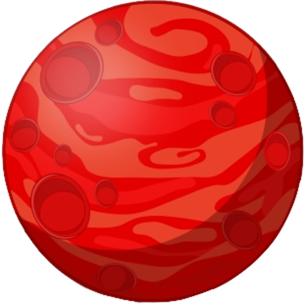

I valori di default della flexbox sono
Qui lo spazio orizzontale rimanente viene distribuito tra i pianeti, esludendo i bordi esterni: non c'è spazio a sinistra di Mercurio e a destra di Nettuno.
Qui lo spazio orizzontale rimanente viene distribuito tra i pianeti, inclusi i bordi esterni a sinistra di Mercurio e a destra di Nettuno
space-around suddivide lo spazio orizzontale rimanente distribuendone una frazione doppia tra i pianeti e una frazione singola ai bordi esterni (come se i pianeti si tenessero per mano: tra un pianeta e l'altro ci sono 2 braccia di spazio, ma tra Mercurio o Nettuno e il bordo c'è un braccio solo)
Qui lo spazio verticale rimanente viene distribuito equamente sopra e sotto gli elementi